Nerost (minerál)
Je stejnorodý – celý kus má stejné složení. Často tvoří pravidelné krystaly. Křemen, slída, kalcit, pyrit, zlato.
Pro 4.–5. ročník: poznávání podle vlastností, rozdíl mezi horninou a nerostem, využití.
Kameny kolem nás nejsou všechny stejné. Geologové rozlišují nerosty a horniny. Nerosty jsou jako stavební kostičky, horniny jsou stavby, které z nich příroda poskládala.
Je stejnorodý – celý kus má stejné složení. Často tvoří pravidelné krystaly. Křemen, slída, kalcit, pyrit, zlato.
Tvoří skály a velké části zemské kůry. Většinou je složená z více nerostů: žula = křemen + živec + slída.
Podle vlastností: barva, lesk, tvrdost (křemen rýpe do skla, sádrovec rýpneš nehtem), vápenec a kalcit šumí s octem, magnetit přitahuje magnet.
Podívej se zblízka. Když vidíš různá zrnka vedle sebe (světlá a tmavá), je to nejspíš hornina. Když je celý kus stejný a má rovné lesklé plošky, je to nejspíš nerost.
Pozor na výjimky: vápenec a mramor jsou horniny, i když jsou hlavně z jednoho nerostu – kalcitu. Uhlí je hornina, která vznikla ze zbytků pravěkých rostlin.
Horniny a nerosty denně používáme: žula na dlažbu, vápenec na cement, křemen na sklo, grafit do tužek.
Na kusu kamene vidíš světlá a tmavá zrnka. Je to žula. Patří mezi horniny, nebo nerosty?
✅ Žula je hornina – skládá se z křemene, živce a slídy.
Nerost (minerál) je stejnorodá přírodnina – celý kus má stejné složení (sůl, křemen, zlato). Hornina tvoří skály a velké části zemské kůry. Většinou je složená z více nerostů (žula), někdy hlavně z jednoho nerostu (vápenec a mramor z kalcitu) nebo ze zbytků rostlin (uhlí).
Skutečné vzorky z geologických sbírek. Prohlédni si je dobře – stejné fotografie potkáš v poznávačce.
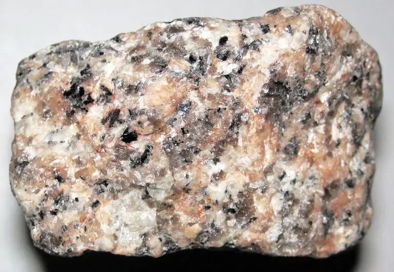
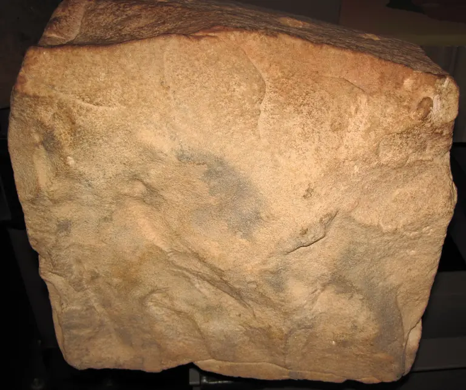
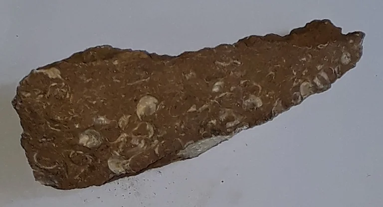
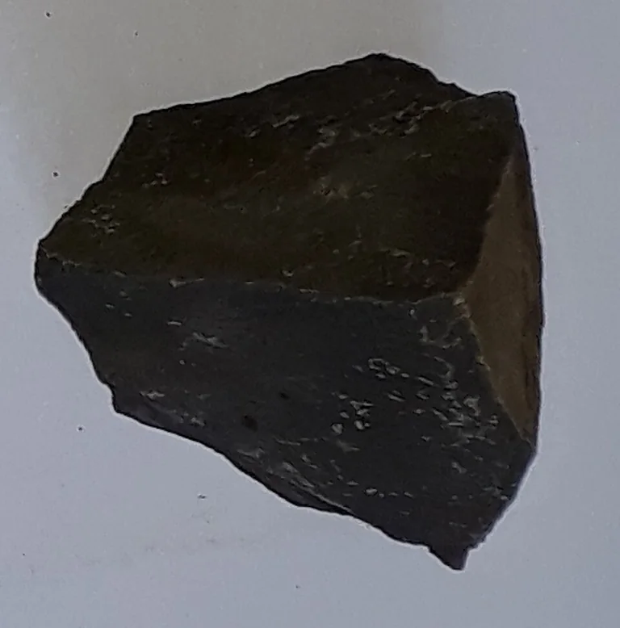
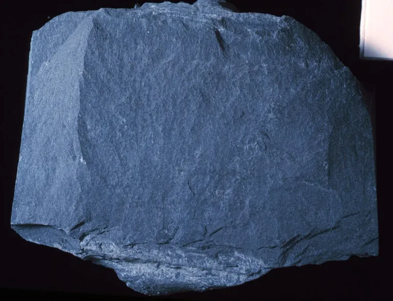
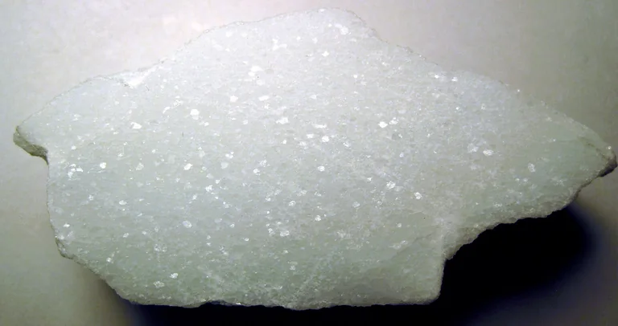
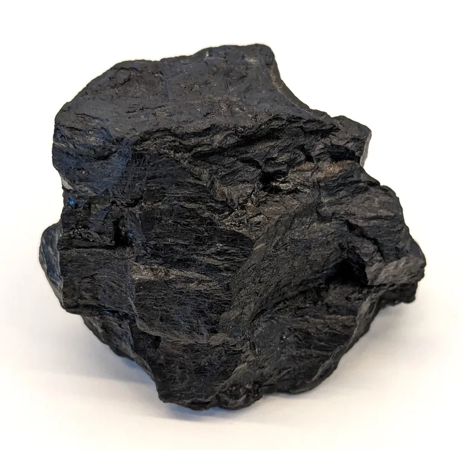


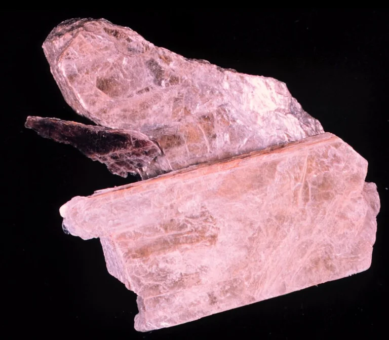


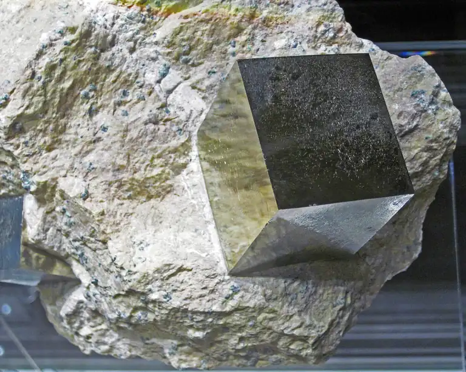
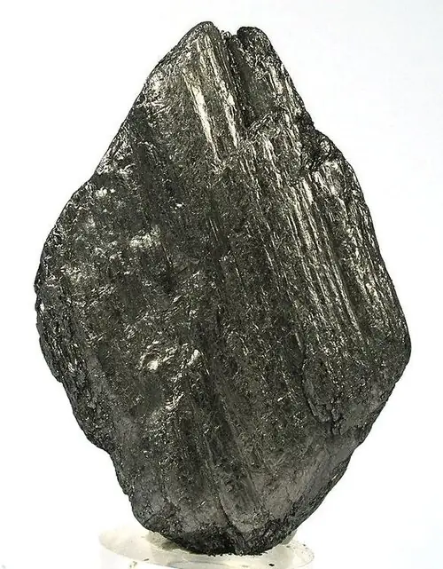
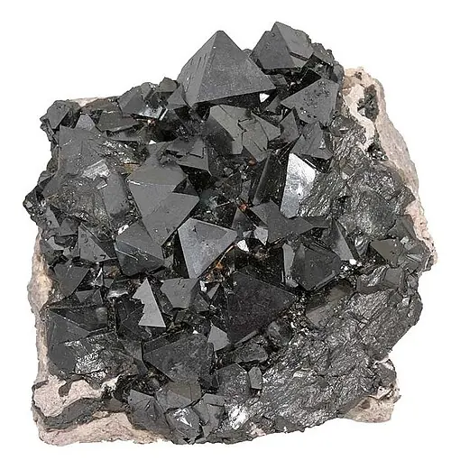
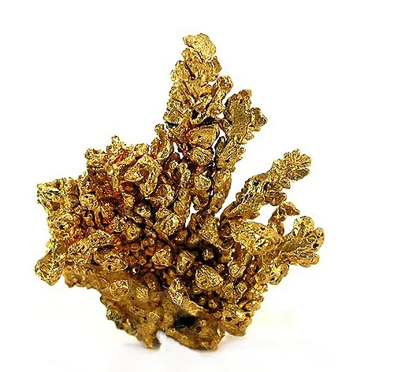
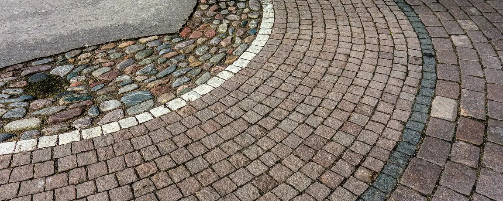
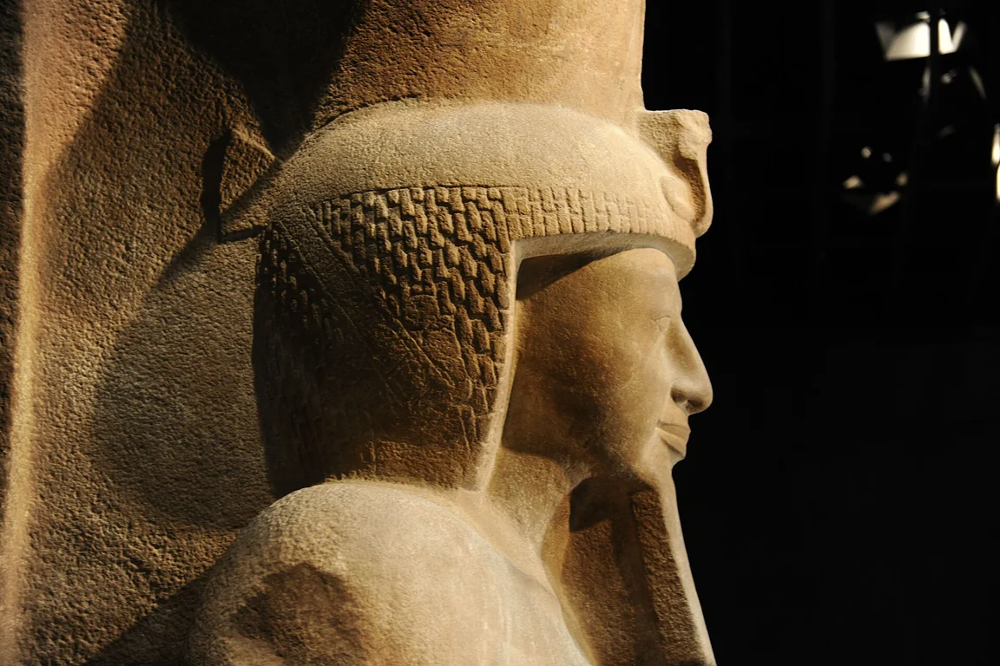
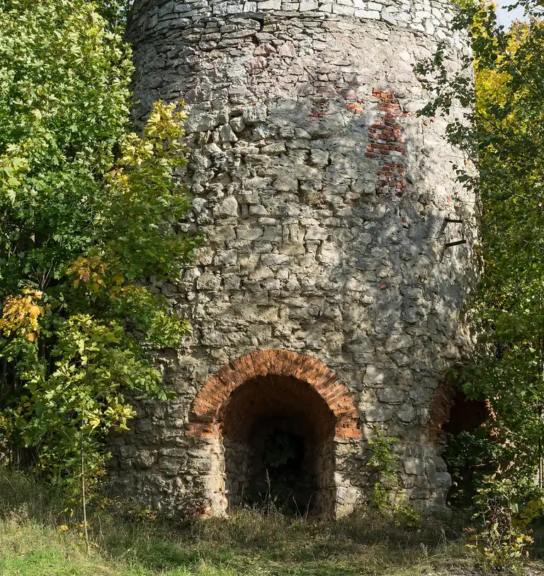
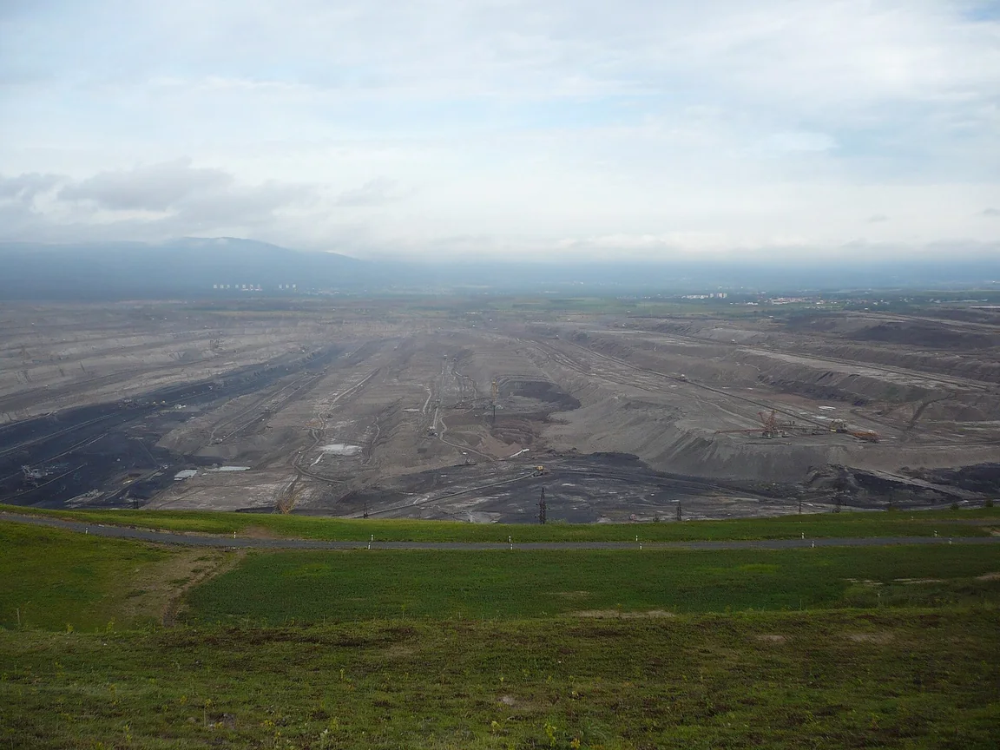
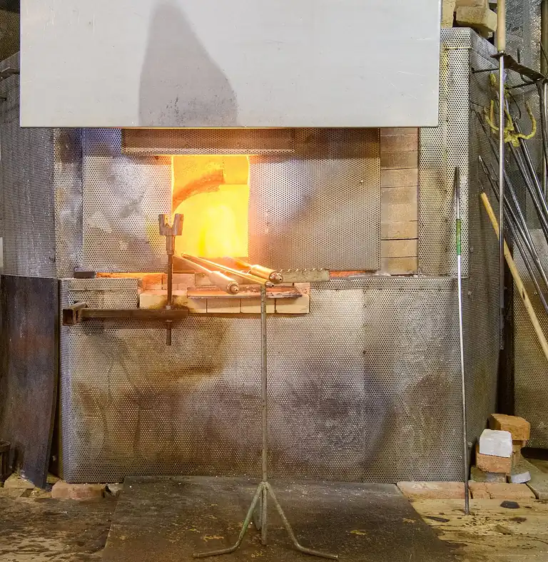
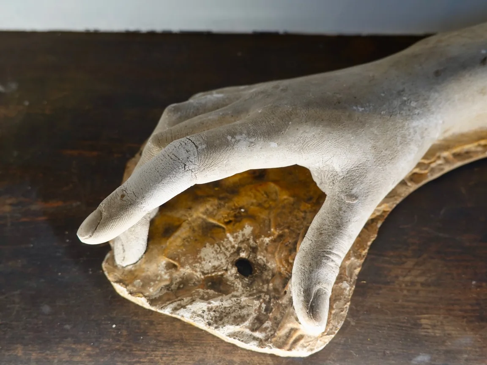
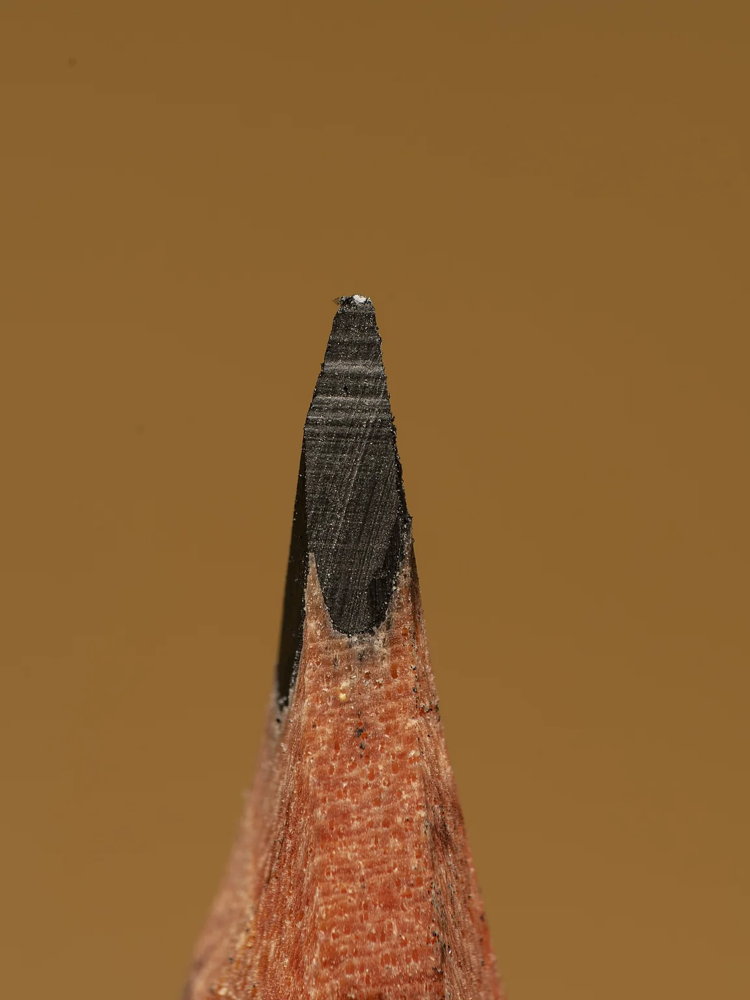
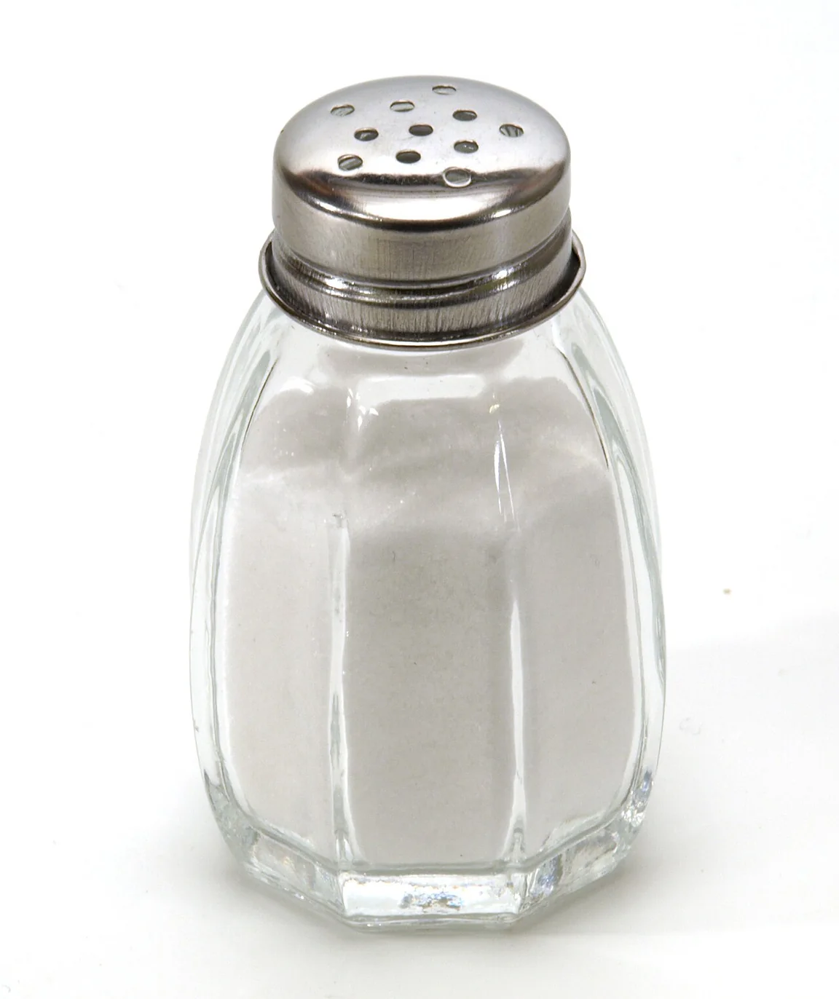